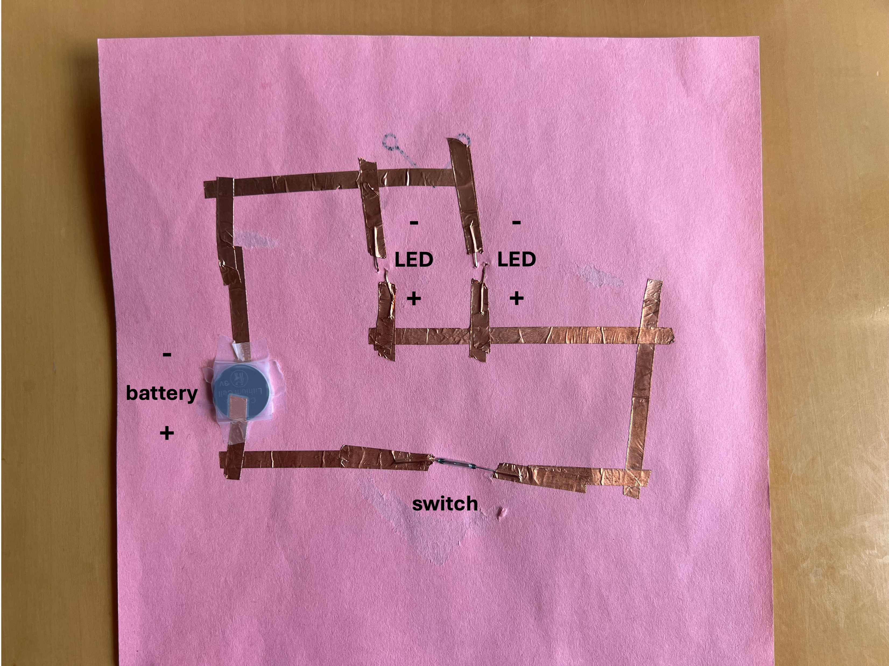

I led a paper circuit art lesson for an after school engineering program for 4th and 5th grade students at a local elementary school. I loved having the opportunity to teach students about circuit concepts with a hands-on activity that fostered their creative expression as well.
Below are links to two resources I used to help design my lesson plan:
